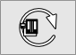
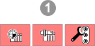
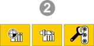
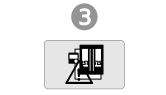

9.3. Synchronising data and performing consistency checks
A consistency check must be performed before an NC program is used.
For this purpose, the current data is loaded from the machine and a check is made to see whether the data in the NC program matches the real data on the machine.
|

|
Update Heidenhain CNC: Transfer data from the machine. |
|



|
If the values in the Origin table, Tool table or Machine configuration areas do not match, the corresponding areas are graphically highlighted by colored buttons. A distinction is made between Error Error Consistency check with error(s). Warning Consistency check with warning(s). Continue? If the question is answered with Yes, the NC program is loaded onto the machine and the following message is output: Upload to CNC succeeded.
NoteAlarms for Heidenhain controllers are shown in the |
Origin table
Coordinate values (X, Y, Z) are checked, as are spatial rotations (degrees) for SPA, SPB, SPC and rotations (degrees) for the rotary axes used (A and B axis in the example). If the settings in the machine do not match the settings in CONNECTED
Machining, this is either marked as an error  or warning
or warning  .
.
Under Check tolerances, define the maximum permitted deviation for coordinate values, spatial rotations and rotations of the A, B and C axis.
 Enable/disable a value for the check tolerance.
Enable/disable a value for the check tolerance.
 Click the icon to increase the check severity for a defined value (from warning to error) or decrease the check severity (from error to warning).
Click the icon to increase the check severity for a defined value (from warning to error) or decrease the check severity (from error to warning).
 Only the origins used in the NC program are displayed in the origin table when the Job Origins option is selected. All the origins defined in the machine are displayed using the
All origins option.
Only the origins used in the NC program are displayed in the origin table when the Job Origins option is selected. All the origins defined in the machine are displayed using the
All origins option.
 Transfer the origin selected in the table to the VIRTUAL Machining Center (only possible if no material removal has been activated). The toolpaths
are recalculated.
Transfer the origin selected in the table to the VIRTUAL Machining Center (only possible if no material removal has been activated). The toolpaths
are recalculated.
 Load the origins from the controller into the origin table of the CONNECTED Machining.
Load the origins from the controller into the origin table of the CONNECTED Machining.
Tool table
The following are checked: length (L), radius (R), radius2 (R2), additional length compensation (DR) and additional radius compensation (DR). If the settings in the machine do not match the settings in CONNECTED Machining, this is either marked as an error or warning .
Only the tools used in the NC program are displayed in the tool table when the Job tools option is selected. All tools that are known to the machine are displayed using the
Tool table option and all tools of the used magazine are displayed using the Tool magazine option. If the Job tools function is enabled, tools that are missing in the machine are also marked.
Enable or disable the check tolerance for L (length), R (tool radius) or R2 (tool radius2).
Click the icon to increase the check severity for a value (from warning to error) or decrease the check severity (from error to warning).
Define the maximum permissible positive or negative  deviation for L (length), R (radius), or R2 (radius2).
deviation for L (length), R (radius), or R2 (radius2).
 Update tools.
Update tools.
 Restore tool data backup: Load tool data, which was saved using the Write tool data to cnc function, into the machine control.
Restore tool data backup: Load tool data, which was saved using the Write tool data to cnc function, into the machine control.
 Write tool data to cnc: Transfer tool data from the program currently loaded in VIRTUAL Machining Center to the
machine control.
Write tool data to cnc: Transfer tool data from the program currently loaded in VIRTUAL Machining Center to the
machine control.
When data is transferred, matching by tool number or tool name is carried out (depending on what is set in the postprocessor configuration). If the tool numbers or tool names are the same, a decision can be made regarding which tools will have their data transferred from the program to the controller.
Use Overwrite all to transfer all tool data to the controller, the Create new entries only function to ensure that no entries are overwritten or Decide for each entry to individually determine which tool data is overwritten.
After the tool data has been transferred, a backup file of the entire tool table can be created in *.xml format. The backup includes the most recently changed tool data as well as the existing tool data.
Restore tool data backup can be used to transfer an existing backup file to the controller again. Here, the system checks whether the backup file originates from the same machine.
Machine configuration
The axis limits for the rotary and linear axes are checked. There is also a check to see whether the Shorter distance option is allowed or defined for one of the rotary axes. If the limits on the machine are more restrictive than in VIRTUAL Machining Center (larger minimum or smaller maximum), this is marked either as an error (1) or warning (2).
Click the icon next to Shorter distance or Axis limits to increase the check severity for an option (from warning to error) or decrease the check
severity (from error to warning).
Note
The Shorter distance option is relevant for machines with an unlimited ‘modulo’ rotary axis and a travel range of 0 - 360°. Here, the rotary axis can be positioned, for example, from +355° to +5°, via the Shorter distance with a rotary movement of +10°.
Example: With BC kinematics and rotary axis in the table.